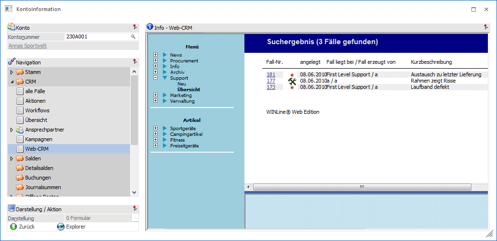
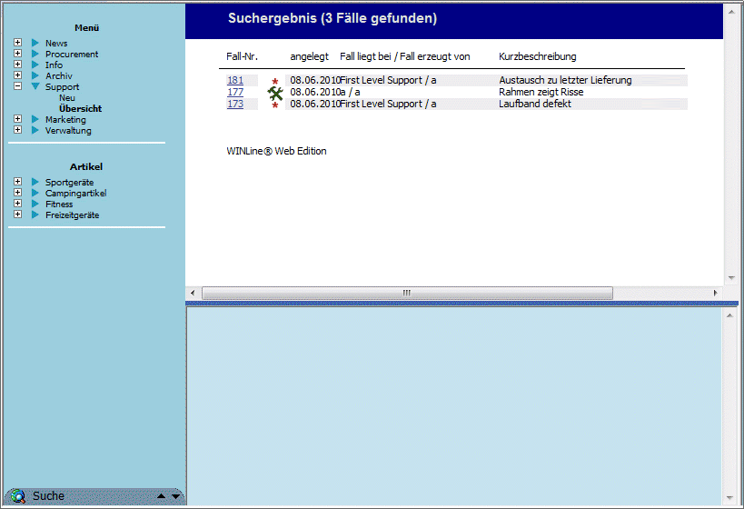
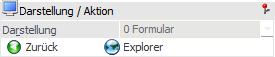

Sind die folgenden Voraussetzungen gegeben, dann wird direkt in diesem Fenster der Internet Explorer geöffnet und alle Fälle des Kunden, die über das Modul "WEBEdition" erfasst wurden, angezeigt.
ü Es muss im WinLine ADMIN eine gültige WEBEdition, sowie der virtuelle Pfad (virtual Path) mit dem die WEBEdition angesurft wird, eingetragen sein.
ü Der aktive CWL-Benutzer muss als WEB-Benutzer angelegt sein, und muss als Mandant den aktuellen Mandanten eingetragen haben (hat der aktive Benutzer in den WEB Benutzer-Einstellungen einen anderen Mandanten hinterlegt, so wird dieser Mandant angesurft).
ü Dieser WEB-Benutzer muss in der WEBEdition die Berechtigung haben, Fälle des Kunden anzusehen.

Die Ansicht "Web-CRM" besteht aus den folgenden Info-Elementen:
ü Info - Web-CRM
ü Darstellung / Aktion
Info - Web-CRM

An dieser Stelle werden die CRM-Fälle dargestellt. Durch einen Klick auf den Hyperlink (Fallnummer) wird der komplette Fall in diesem Fenster angezeigt.
Darstellung / Aktion

Ø Zurück
Mittels Button "Zurück" kann auf die vorherige Seite gewechselt werden.
Ø Explorer
Wird der Button "Explorer" gedrückt, so wird ein eigenes Explorer-Fenster geöffnet, in welchem die Liste aller Fälle des Kunden angezeigt wird.